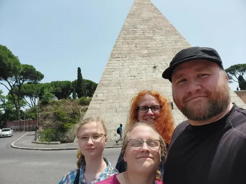
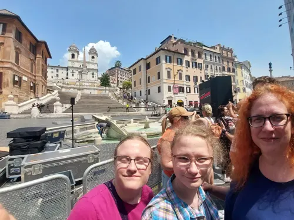
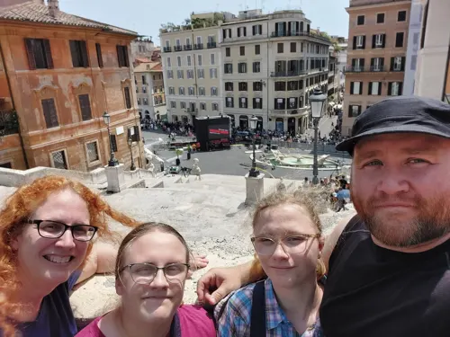
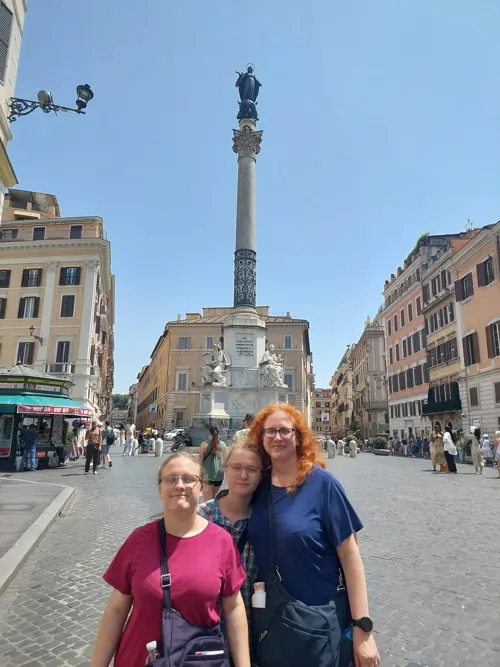
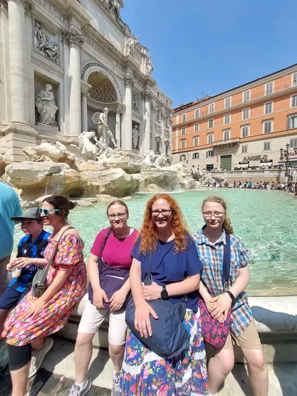
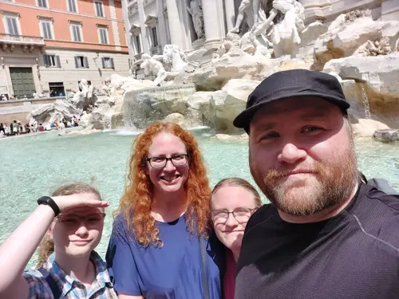
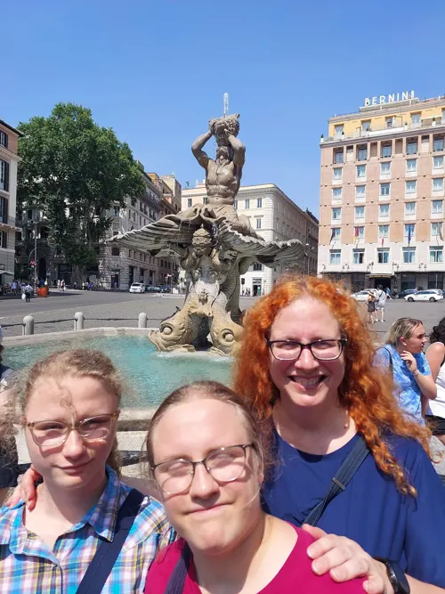
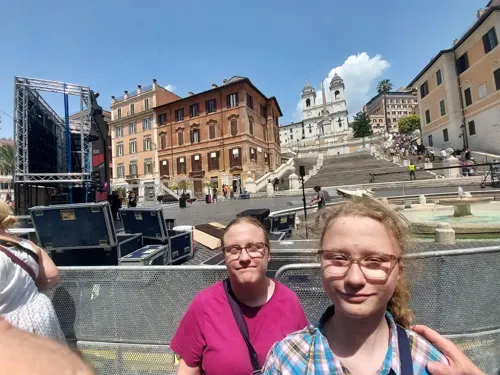

A stroll through Rome
June 18, 2023

On June 18, 2023 we took a stroll through Rome.
Stops included the Pyramid of Cestius, the Spanish Steps, Trevi Fountain, and the Fontana del Tritone.
















